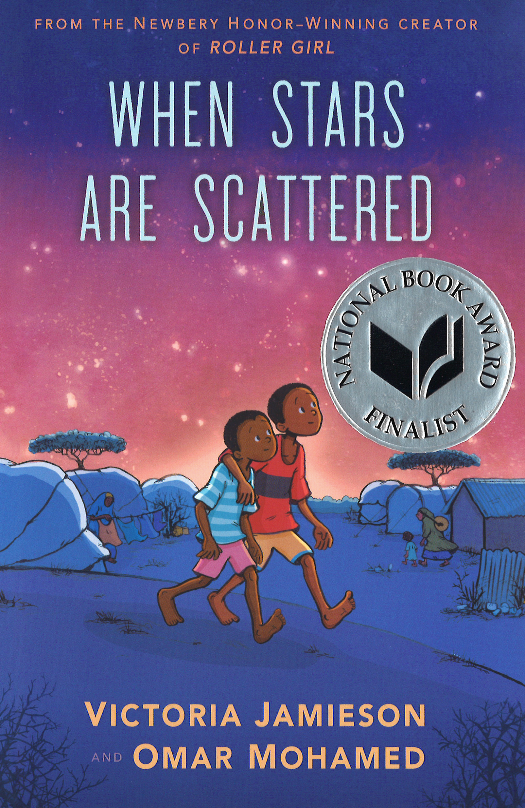
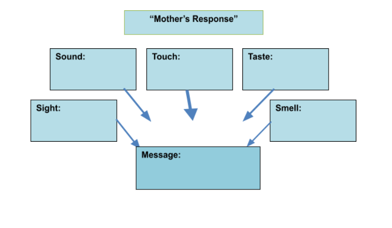
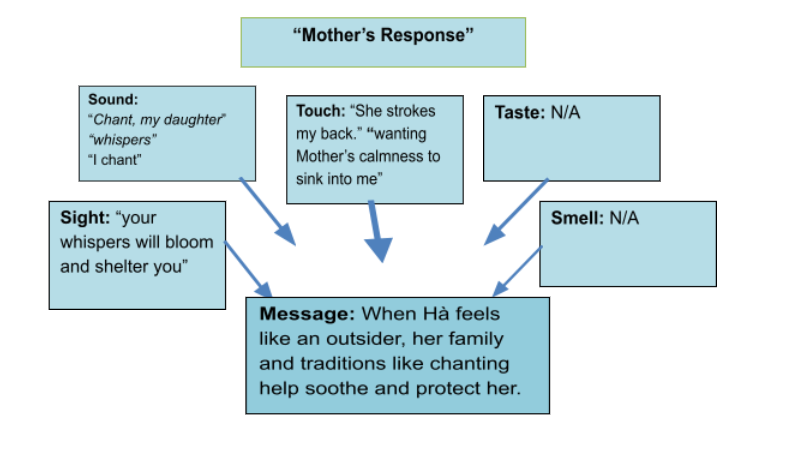

Read about Hà, a ten-year-old girl forced to leave Vietnam for Alabama, who struggles to fit in but finds strength in her family, her new friends, and herself.
“An enlightening, poignant and unexpectedly funny novel in verse. In her not-to-be-missed debut, Lại evokes a distinct time and place and presents a complex, realistic heroine whom readers will recognize, even if they haven’t found themselves in a strange new country.”
—Kirkus Reviews (starred review)
Newbery Honor Book
National Book Award Winner
Disclaimer By clicking on links and/or navigating to URL addresses, you will be leaving the Savvas Now™ program and entering into an external website (third party) that may contain content or…Learn More
Hooks
Build Background
Before introducing the Big Question, explore the online links below to build background about the Vietnam War, the complexities for both the Vietnamese and the Americans after it ended, and the struggle for Vietnamese refugees to adapt to a new life and language in the United States. Preview all links and content before sharing with students.
Vietnam War
(length: 1:42 min) (length: 1 colon 42 min)
To locate the video, copy and paste the URL into your browser:
Before sharing the video, preview the terms drafted (“forced to serve in the military”) and Communism (“a system in which the government, not private citizens, owns and controls a nation’s goods, services, and production”). Then show Vietnam on a world map. Explain that the war divided Vietnam in half, with North Vietnam and South Vietnam fighting against each other. North Vietnam was Communist, backed by Communist countries, including China and the former Soviet Union. South Vietnam was backed by anti-Communist countries, including the United States. The controversial war lasted almost twenty years. Prior to viewing, tell students to identify one fact in the video that surprised them.
Ask: In the video, what facts stood out to you? How does this help you understand the impact of the Vietnam War?
This video describes the American withdrawal from Vietnam, the Fall of Saigon, and the South Vietnamese refugees who fled, using first-person accounts. Before sharing the video, explain the terms offensive (“an attack”), invade (“intrude, often through force”), and evacuate (“leave”). To support active viewing, tell students to identify two or three different perspectives the video includes.
Ask: How might you feel about the United States as a Vietnamese person in South Vietnam at the end of the war? How might you feel if you were an American soldier?
Introduce the Big Question
What helps us feel like we belong?
Display the Big Question and discuss what it means to belong or to “feel like you belong.” To prompt ideas, share a personal experience with students of when you felt like you belonged or when you felt like you did not belong. Include details that made you feel that way. Then, use the following prompt and sentence starters to explore the Big Question with your students.
Tell about a time you felt like you belonged or a time you felt like you did not belong.
Encourage your students to use the following sentence frame in their journals: I felt like I belonged/didn’t belong when ________________ because ___________ .
Elicit that many things give people a sense of belonging, from people—such as family and friends—to sharing traditions and celebrations, to participating in hobbies, sports, and school activities.
Mirrors & Windows
Three-Step Interview: What helps us feel like we belong?
Use the activity below to help students explore and share their understanding of belonging, including what helps people feel like they belong and what people can do to help others feel like they belong too.
Display or provide the following statements. Explain that students will form small groups to interview each other, agree or disagree with the statements, and then explain or support their responses.
Statements:
1. When moving to a new place, people should do everything they can to fit in.
2. One person can make someone feel like he or she does—or does not—belong.
3. Sharing traditions shows people that they belong.
4. If people feel like they belong, they are more willing to embrace challenges.
Allow time for group discussion before facilitating a whole-class discussion. See Activity Support for further instructions.
Author’s Craft
Genre: Novel in Verse (Prose Poems)
Display the first few pages of the novel. Explain that Inside Out & Back Again blends genres. It is a historical novel that tells a story set in Vietnam and Alabama in 1975, at the end of the Vietnam War. But unlike most novels, the story is written as a novel in verse, or a series of “prose poems” instead of chapters. Clarify that prose is ordinary writing, with complete sentences and paragraphs. Most novels are written in prose. Poetry, or verse, is unlike prose in that it is language arranged in lines and stanzas. In addition, poetry uses language to create specific effects through sound, rhythm, and imagery. Some poems have rhyme and a consistent rhythm, but some do not. Inside Out & Back Again is written in free verse prose poems, which are structured like poetry but do not have regular rhyme or rhythm.
Display the first prose poem, “1975: Year of the Cat,” on pp. 1–3. Guide students to identify the features that are more characteristic of poetry (lines, line breaks, stanzas) and those that are more characteristic of prose (some sentences, usually no rhyme or rhythm). As students read, have them think about why the author chose to write a novel in verse for this story.
Imagery and Sensory Details
Imagery includes any literal or figurative language that creates vivid pictures in the reader’s mind, including sensory details. Provide an example, such as “An old, angry knot expanded in my throat” from p. 2. Explain that the image of the “old, angry knot” expanding in Hà’s throat appeals to both sight and touch. In this case, the imagery is figurative. There isn’t a literal knot in her throat, but the image expresses the sensation of her throat tightening painfully as she gets upset.
Tell students to watch for examples of imagery throughout the text and to think about how the language helps them visualize the image or scene. Explain that writers often create images that work together to help develop an overall message. As students read, have them identify images and the senses they appeal to, and then analyze whether the images help develop a larger message.
Sight
Sound
Touch
Taste
Smell
“old, angry knot”
N/A
“knot expanded in my throat”
N/A
N/A
Disclaimer By clicking on links and/or navigating to URL addresses, you will be leaving the Savvas Now™ program and entering into an external website (third party) that may contain content or…Learn More
Summary
In 1975, Hà, the youngest in her family, turns 10. In Saigon, Hà delights in the tastes and smells of the Vietnamese markets, the familiar traditions of Tết, and the promising growth of her papaya tree in the backyard. She tolerates her three older brothers and admires her mother who is raising the family alone. Hà feels the heavy absence of her father, who was captured during a navy mission when she was only a baby. North Vietnam and South Vietnam have been at war longer than Hà has been alive, but by spring 1975, the fighting gets closer and the family’s—and country’s—future is in peril. Prices rise, friends leave Saigon, exploding bombs get closer, and Hà’s family must make plans to escape. Just before the Fall of Saigon, they board a crowded naval ship headed out to sea, toward the United States. Conditions on the ship are miserable, and Hà and her family are running out of food. After weeks at sea, the ship reaches Guam, and Hà’s mother decides they will resettle in the United States. The U.S. Government pays Americans to sponsor Vietnamese refugees who were forced to flee. When an Alabaman car salesman (“Our Cowboy”) shows interest in sponsoring Brother Quang, who studied engineering, Hà’s mother persuades him to take in the family of five.
* Note that this section includes some sensitive content, including mentions of food insecurity. It also includes a disturbing image of a baby chick that suffocates in Brother Khôi’s pocket during the crowded boarding on the naval ship.
Hooks
Build Background
Share the links below to help students build background about Tết Vietnamese traditions as well as the situation South Vietnamese refugees faced as they fled Vietnam in April 1975. Preview all links and content before sharing with students.
Before sharing this video clip, clarify that Tết, the Vietnamese Lunar New Year, is the most important holiday in Vietnam. Inside Out & Back Again starts during Tết in 1975 and ends during Tết the following year. Prior to viewing, tell students to listen for and list two things that Tết symbolizes for the Vietnamese people. Then discuss the following questions.
Ask: What does the video about Tết reveal about the role of family and traditions in Vietnam? How does Tết remind you of traditions you celebrate or other traditions or holidays you know about?
Explain that after the Communists took over Saigon, South Vietnamese people had to flee the country for their safety. Some people, like Hà and her family, escaped on U.S. naval boats to the United States. This video clip gives historical images and a first-person account from a South Vietnamese refugee, Carolee GiaoUyen Tran, who describes what it was like to escape on the naval ships. Prior to viewing, tell students to jot down which images they find most striking and why. Play the video and discuss the following questions.
Ask: How do the images and the personal story help you understand the situation refugees faced as they fled Vietnam? Why do you think it’s important that refugees share stories like this?
Mirrors & Windows
After students read Parts 1–2, have them share their thoughts about how traditions connect people and give them a sense of belonging, even during difficult times. Use the questions below to help students explore the topic.
How is this year’s celebration of Tết like that of other years for Hà? How is this year’s Tết different for her? (This year, Hà and her family follow the main Tết traditions, such as eating special foods and visiting the Teller of Fate. But this year Hà gets angry that “only male feet can bring good luck,” so she secretly taps her toe first. War makes Tết feel ominous this year: The Teller of Fate warns their lives “will twist inside out,” and there is a rumor the Tết food will be “smeared with blood.”)
How does Mother include Hà’s father in their family traditions, even though he isn’t with them in person? (On pp. 12–13, Hà describes Mother preparing an altar for his return. The altar tradition suggests the family is still hopeful for his return and that he is still part of the family.)
How might sharing traditions as a group help people feel like they belong? (Possible response: Traditions help people feel connected to and supported by others, including those from other generations and other places.)
Tell about a time when a shared tradition helped give you a sense of belonging.
Write About It!
Journal Display the sentence frames below and have students write about their experiences.
A tradition that gave me a sense of belonging was ___________ .
It helped me feel like I belonged because __________ .
*If students need more prompting, provide a student exemplar.
Student Exemplar:
“A tradition that gave me a sense of belonging was Thanksgiving at our neighbor’s house. It helped me feel like I belonged because we all shared food and showed gratitude for each other.”
Flexible Group Activities
To maximize student performance, use flexible grouping options that best meet your instructional goals and your students’ needs.
Journal Share
Have students share and discuss their journal entries about a time when a shared tradition gave them a sense of belonging.
Analyze a Quote
On p. 46, Brother Khôi takes Hà to their garden to show her his chick that just hatched. He says, “No matter what Mother decides, we are not to leave. I must protect my chick and you your papayas.” Have students discuss how Brother Khôi’s statement relates to different types of belonging.
Author’s Craft: Imagery and Sensory Details
Have students work in groups or pairs to identify examples of imagery and sensory details in the prose poems. Directions and resources are included in Activity Support.
Summary
In Alabama, the cement lanes and green lawns reveal a “clean, quiet loneliness,” so different from the bustling markets filled with the lively sights, sounds, and tastes of Saigon. Hà and her family try to eat American fried chicken and hot dogs, try to learn the rules and exceptions of English, and try to be grateful and fit in with their new neighbors, but it is hard to feel like they belong. At school, Hà is bullied for being different and feels “dumb” and discouraged as she struggles to communicate in English. However, a kind and patient neighbor, Mrs. Washington, helps her improve her English and navigate her new school and relationships. Like Hà’s mother, Mrs. Washington helps Hà gradually accept and adapt to her new home while finding strength and support in her family and Vietnamese traditions. Hà realizes that her brothers and mother also face prejudice, and their support helps her learn how to stand up for herself and rise above the ignorance and violence of others.
* See About the Book for potential sensitivity issues.
Hooks
Make Connections
Share the video below to help students make connections to the text and why Thanhhà Lại wrote the story in prose poems. Preview all links and content before sharing with students.
Prior to viewing, tell students to note a major difference between the English and Vietnamese written languages. Then share the audio recording and discuss the following questions.
Ask: Thanhhà Lại says she used poems because she “wanted to convey what it’s like to think in images.” Do you think this style is effective in showing Hà’s thoughts and feelings during her first day at school? Explain. Would you write about your own experiences using a style like this? Why or why not?
Mirrors & Windows
After students have read Part 3, have them reflect on how Hà’s family gives her a sense of belonging and helps her find the confidence and courage to stand up to bullying without returning violence.
After her first day at school, Hà wakes Brother Vu to tell him about it. How is his experience like Hà’s? How does Brother Vu deal with prejudice? (Someone also made fun of Brother Vu for being Asian. Brother Vu was able to do a kick that made the other boy stop, but without hurting him.) What does Hà learn from Brother Vu? (Brother Vu helps her learn to control her temper and teaches her defense. He helps her learn not to seek violence or revenge.)
Both Brother Vu and Mother help Hà understand the power of nonresistance, an important principle in martial arts. Nonresistance can mean using an opponent’s force against them, rather than fighting the opponent directly. In what other ways can family or traditions help people find ways to solve problems?
Describe a time when belonging to a family or other group helped you face a challenge or solve a problem.
Write About It!
Journal Display the sentence frames below and have students write about their experiences.
Belonging to __________ helped me __________ . It helped me because _________ .
*If students need more prompting, provide a student exemplar.
Student Exemplar:
“Belonging to my yoga class helped me learn breathing exercises and meditation. It helped me because I learned how to work through problems calmly, without losing my temper.”
Flexible Group Activities
To maximize student performance, use flexible grouping options that best meet your instructional goals and your students’ needs.
Journal Share
Have students share ideas about a time when belonging to a family or other group helped them face a challenge or solve a problem.
Analyze a Quote
Display the quote from p. 195: “No one would believe me but at times I would choose wartime in Saigon over peacetime in Alabama.” Have students discuss what Hà means when she says this and how the statement relates to the need to belong.
Author’s Craft: Imagery and Sensory Details
Have students work in groups or pairs to analyze the quotation and then determine how the images and sensory details help develop a message in the text. Directions are included in Activity Support.
Summary
By the end of the year, the war has ended in Vietnam. There is no word about Hà’s father, and Hà’s family still shifts between hope and sadness that he may be gone. When Mother loses the amethyst stone on her ring, the family realizes the sign: their father is truly gone. The family prepares an altar to mourn his death and to begin to let go. Hà looks ahead, toward Tết and the promise that luck starts over every year. She chooses gifts for the special people in her life who have welcomed her and helped her through this difficult year. She will give Pem (Pam) a tin of flower seeds from Vietnam, and she tells Mrs. Washington that she’d like to plant flowers from Vietnam in Mrs. Washington’s backyard. As Tết approaches, Hà’s older brothers start planning for their future careers. Hà’s family celebrates the new year, keeping the familiar rituals but also adapting them creatively in their new home. This year for Tết, Hà’s hope is “to truly learn to fly-kick, not to kick anyone so much as to fly.” (p. 260)
* See About the Book for potential sensitivity issues.
Hooks
Make Connections
Before sharing the video and image, explain of the allusions to Bruce Lee in the story to help students make connections. Clarify that Brother Vu (“Vu Lee”) practices martial arts after his hero, martials arts expert and actor Bruce Lee (1940–1973). Lee was born in Hong Kong but lived in San Francisco and Seattle as an adult. There, he merged his background in philosophy with martial arts training and ultimately created his own martial art. Lee made successful martial arts films, and his work changed the way Asians wrew presented and viewed in American film. Today Lee is recognized for his philosophy of self-expression and personal growth through the balance of mind, body and spirit. Preview all links and content before sharing with students.
Bruce Lee: Be as Water, My Friend
(length: 0.38 min) (length: 0 dot 38 min)
To locate the video, copy and paste the URL into your browser:
https://www.youtube.com/watch?v=cJMwBwFj5nQ&t=1s
Share the video of Bruce Lee’s interview in which he delivers his famous philosophy. Then discuss the following questions.
Ask: What important characteristics of water does Lee highlight in his examples? (Water flows and adapts to its surroundings, yet it is also incredibly powerful.) Why might “being like water” be a good mindset for martial arts—and for life? Do you think Brother Vu and Hà would agree with Lee’s philosophy? Explain.
Bruce Lee: Fly-Kick
To locate the photograph of Bruce Lee’s fly-kick, copy and paste the URL into your browser and scroll down the timeline, clicking on the 1971 The Big Boss entry:
https://bruceleefoundation.org/about-bruce-lee/
This photo shows Lee demonstrating his famous fly-kick in the movie The Big Boss, from 1971. Display the photo and remind students that throughout Inside Out & Back Again, Hà wants Brother Vu to teach her how to fly-kick.
Ask: Why do you think Hà wants to learn the fly-kick at first? How does her wish to fly-kick change by the end of the story? How does learning martial arts help Hà feel like she belongs?
Mirrors & Windows
Have students discuss how sharing traditions and personal details can help show others that they belong. Use the prompts and questions below to help students explore the topic.
Hà wants to give Pem (Pam) the tin of flower seeds she gathered with TiTi. She also tells Mrs. Washington she’d “like to plant flowers from Vietnam in her backyard.” (p. 254) How do these gifts show how Hà and her new friends adapt and combine traditions? (The seeds are from Vietnam, where growing plants was an important part of Hà’s life. The American friends gave Hà gifts for an American holiday, Christmas, and Hà gives her friends gifts for the Vietnamese holiday, Tết.) How does sharing the gifts help give others a sense of belonging? (Hà and her friends exchange thoughtful gifts to show that they are important to each other.)
Hà tells Mrs. Washington about her father’s death and her belief that “Tết is coming and luck starts over every year.” (p. 254) Describe a time when you shared something personal with someone else. Do you think sharing this gave the person a sense of belonging? Explain.
How might celebrating the New Year connect people from all over the world?
Write About It!
Journal Display the sentence frame below and have students write about their experiences.
Once, I shared __________ with __________ . I think sharing this made him/her feel __________ because __________ .
*If students need more prompting, provide a student exemplar.
Student Exemplar:
“Once, I shared that my mom lost her job with my friend Jamal. I think sharing this made him feel like he belonged because we often shared difficult things and supported each other.”
Flexible Group Activities
To maximize student performance, use flexible grouping options that best meet your instructional goals and your students’ needs.
Analyze Images
Have students share ideas about a time when they shared something personal with someone and whether they felt like sharing it gave the other person a sense of belonging.
Analyze a Quote
At Tết, Mother predicts the family’s year, saying, “Our lives will twist and twist, intermingling the old and the new until it doesn’t matter which is which.” (p. 257) Have students discuss how this fortune is different from last year’s fortune. What does Mother’s prediction reveal about her changing perspective?
Unlock a Key Sentence
Display and read aloud the following key sentence from Inside Out & Back Again :
“This year I hope I truly learn to fly-kick, not to kick anyone so much as to fly.” (p. 260)
Guide students in unlocking the layers of meaning conveyed in the sentence using the protocol included in the Activity Support.
Reflect on the Big Question
What helps us feel like we belong?
Draw students’ attention to the Before Reading activity and students’ responses regarding what helps them feel like they do—or do not—belong. Then have them reflect on the following prompts:
How do people help Hà feel like she belongs?
What makes her feel like she doesn’t belong, and how does she come to terms with that?
How does the story show how you might help someone else in a situation like Hà’s?
What strategies from Hà’s experience would you use if you had to start over in a new country?
How might adapting and combining traditions give people a deeper sense of belonging?
Then have students think about the question more universally through the Mirrors & Windows and Project-Based Learning activities.
Mirrors & Windows
What helps us feel like we belong?
Students have reflected on how family and traditions help Hà feel like she belongs, including helping her adapt to her new life while strengthening and deepening her sense of self.
Now have them reread the statements from Before Reading. Have them think about how their thoughts have developed or changed after reading the story. Have them also consider how Hà might respond to these statements, at the beginning of the story and at the end.
1. When moving to a new place, people should do everything they can to fit in.
2. One person can make someone feel like he or she does—or does not—belong.
3. Sharing traditions shows people that they belong.
4. If people feel like they belong, they are more willing to embrace challenges.
Use the guiding questions to prompt discussion:
Has your response for any of the statements changed after reading the text? Why?
How did the story mirror your own experiences and/or help you better understand the experiences of others, such as refugees, immigrants, and people learning English as a second language?
In Alabama, Hà holds onto many familiar traditions while embracing some new traditions too. Have you or anyone you know combined traditions in a similar way? How might this help people gain a sense of belonging in a new place?
Write About It!
Journal Display the sentence frame below and have students write about their thoughts and reflections on belonging.
After reading Inside Out & Back Again, my thinking about belonging changed/expanded because ____________ .
Project-Based Learning
What helps us feel like we belong?
Have student pairs choose one of the project ideas below. Allow students to choose other project ideas as long as the ideas attempt to answer the Big Question. Then, distribute the Project Template and Project Rubric to students.
Project-Based Learning Ideas
Write a prose poem including vivid imagery and sensory details about an experience related to belonging.
Interview Mrs. Washington about why she wanted to help Hà and how her son’s experience in Vietnam influenced her.
Create a collage or mood board about the people, places, traditions, and activities that help you feel like you belong. Include captions. As an alternative, create a collage for Hà.
Project Template
Have students fill out the project template. Assist students in finding resources to guide their project.
The Project Template is available to assign, download, or print from the Table of Contents for this lesson in Savvas Now.
Project Rubric
Project Rubric Review the 4-Point Project Rubric with students. Discuss each category with students.
The Project Rubric is available to assign, download, or print from the Table of Contents for this lesson in Savvas Now.
Share & Celebrate
Preparing to Present
Provide time for student pairs to practice their presentations, reminding students that each partner should have a significant role in presenting their project. Partners should work collaboratively and follow agreed upon rules, norms, and protocols. Review the 4-Point Project Rubric with students so they understand how they will be assessed.
Explain that students can strengthen their presentations by incorporating different types of media, such as photographs, drawings, and videos. Model how to present orally.
When I present, I make eye contact with the audience. I don’t keep my eyes down.
As I speak, I make sure everyone in the room can hear what I am saying.
I pronounce each of my words clearly and correctly.
I do not rush through my presentation but speak clearly and at a natural pace.

Title:Inside Out & Back Again
Author:Thanhhà Lại
Genre:Historical fiction/Novel in verse
Copyright:2012
Lexile:800L
Page Count:260
Text Also Includes:
Author's Note
Disclaimer By clicking on links and/or navigating to URL addresses, you will be leaving the Savvas Now™ program and entering into an external website (third party) that may contain content or…Learn More
Plot Overview
In 1975 Saigon, Hà celebrates Tết, the Vietnamese Lunar New Year. She shops in the markets and tends her papaya tree. Hà lives with her three older brothers and her mother; her father was captured during a naval mission nine years ago. North and South Vietnam have been at war for years, but as Communist forces advance, Hà’s family must flee. They board a crowded naval ship as the Communists invade Saigon.
At sea for weeks, Vietnamese refugees are packed together with little food or water. Finally, Hà’s ship reaches the United States. An Alabaman agrees to sponsor Brother Quang, but Hà’s mother persuades him to sponsor the entire family.
In Alabama, Hà finds the people distant, the food bland, and English difficult. Hà is bullied and feels dumb when she can’t communicate. But her neighbor Mrs. Washington tutors her and, like Hà’s mother, helps her adapt to her new home. During the holidays, new friends share meals and gifts, and Hà finally starts to feel like she belongs.
When Hà’s family learns her father is truly gone, they find support in each other and familiar traditions. When Tết arrives again, Hà takes comfort that “luck starts over every new year” (p. 254).
Theme Overview
Belonging A key theme in Inside Out & Back Again is belonging. Hà and her family flee Vietnam and must start their lives over in Alabama. There, they face racism and bullying. Yet Hà’s family; her kind neighbor, Mrs. Washington; and her classmates, Pem (Pam) and Steven; help her navigate her new life and give her a sense of belonging.
Family and Traditions Another important theme is the important role of family and traditions. In Saigon, Hà and her family delight in traditions such as Tết. In Alabama, Hà’s mother maintains traditions as they mourn Hà’s father’s death, and Ha’s brothers provide strength and protection as Hà struggles to fit in. Family and traditions help Hà accept her new life, gain a sense of belonging, and strengthen her sense of self. As Hà and her new friends share both American and Vietnamese traditions, she feels—and helps others feel—welcome.
Sensitivity Issues
War Violence The story takes place during the end of the Vietnam War. In Saigon, there is reference to the sound of distant gunfire and bombs exploding. In Alabama, Hà describes her teacher, Miss Scott, showing the class insensitive, graphic photographs from the war, including one of a “burned, naked girl running, crying down a dirt road” (p. 194)—presumably, the disturbing image of Phan Thi Kim Phúc after a napalm attack. In the story, this adds to the sense of being “othered” that Hà experiences. Due to the sensitive nature of such images, this lesson does not include the use of Vietnam War photography featuring children or violence.
Suicide References After receiving news that South Vietnam no longer exists, a woman on the ship tries to throw herself overboard and a man tries to stab himself with a toothbrush. (p. 85)
Racial Bullying/Slurs Hà’s family is the only Asian family in their new community. The story includes a character, Pink Boy, who pokes, chases, and makes fun of Hà for being different. Later he tries to fight her, but she dodges him, and Pink Boy gets hurt as he falls. Hà contemplates kicking him but doesn’t. Brother Vu has a similar experience in which someone calls him “Ching Chong” and trips him. He does a scissors kick but intentionally avoids kicking the other student. Neighbors vandalize the house where Hà’s family lives, including throwing eggs at the house, toilet-papering the trees, and throwing a brick through a window.
Religious References and Irreverence Throughout the story, Hà’s family practices some traditional Vietnamese Buddhist rituals as they hope, pray, and mourn for their father, such as chanting and lighting incense. Hà’s mother checks “Christian” for religion on the sponsor application, attends Baptist mass with their sponsors, and has the whole family baptized. She says, “all beliefs are pretty much the same,” and arguably converts more for social acceptance than for religious reasons. Later classmates tease Hà about Buddhism, calling her “Boo-Da Girl.” She retaliates by yelling “Gee-sus” at them.
By clicking on links and/or navigating to URL addresses, you will be leaving the Savvas Now™ program and entering into an external website (third party) that may contain content or resources for adults. Savvas Learning Company® does not guarantee, approve or endorse the content, resources or products available at these websites, nor does a link indicate any association with, or endorsement between third party and Savvas™. The linked website has its own legal terms, policies, privacy policy and community guidelines, which we recommend that you review before supplying information to the websites or their products and services. Savvas™ does not control these third party websites and is not responsible or liable for the performance of these websites, their services, accessibility features or any other content and resources contained on them.
Activity Support
Three-Step Interview
The Three-Step Interview activity asks students to reflect on their understanding of belonging, including what helps them feel like they belong and how they can help others feel a sense of belonging as well. Use this activity as a warm-up for exploring the theme in Inside Out & Back Again.
1. Display or distribute the statements to students. Clarify any statements as needed and remind students that they’ll need to agree or disagree with each statement and explain why. Interviewers should take notes so they can share responses. Provide sentence frames such as: I agree/disagree with this because___________ .
2. Place students into groups of four. Assign each group member a letter (A, B, C, D).
3. Have the groups of four complete the three-step interview as follows:
Step 1: A interviews B; C interviews D.
Step 2: B interviews A; D interviews C.
Step 3: Members of the group then share the information they learned from the person they interviewed.
4. Give students time to interview and share responses in their groups. Then confer as a class. First, tally the number of agrees or disagrees for each statement. Then, have students share specific explanations from their group. Encourage a variety of explanations. If most students share a particular view, provide counterpoints to probe other perspectives. Finally, summarize the discussion.
Activity Support
Author’s Craft: Imagery and Sensory Details
In this activity, students work together to identify examples of imagery and sensory details that help readers “picture” key details.
First, have pairs work together to identify examples of imagery in one of the following prose poems, using a chart like the one below. Point out that some imagery may appeal to multiple senses and that some poems may not appeal to all senses. As needed, provide the model for “Early Monsoon” below.
Prose Poem
Sight
Sound
Touch
Taste
Smell
“Early Monsoon,” p. 48
“slashes lighten the sky”
“gunfire falls like rain”
“bombs explode like thunder”
“gunfire falls like rain”
N/A
N/A
N/A
“Sour Backs,” pp. 61–62
“One Mat Each,” pp. 63–64
*Answer key is included below.
Then, as a class, compare charts. Have pairs share the imagery from their prose poem and discuss how the imagery helps students picture and connect to the story.
Possible Answers:
Prose Poem
Sight
Sound
Touch
Taste
Smell
“Sour Backs”
“Uncle Son flares elbows into wings, lunges forward protecting his children”
“I see nothing but backs sour and sweaty”
“Brother Vu steps up, placing Mother in front of him and lifting me onto his shoulders”
N/A
“Our family sticks together like wet pages”
“His palms press Brothers Quang and Khôi forward.”
N/A
“sour and sweaty”
“One Mat Each”
“sunset”
“piles of bodies that keep crawling on like raging ants from a disrupted nest”
N/A
“We climb on and claim a space of two straw mats”
“lie side by side”
“us five to huddle together”
“bodies cram every centimeter”
N/A
N/A
Activity Support
Setting Switch
Ask the following questions to support and guide discussion:
What are some details from the story that are specific to the setting of Bangladesh?
(the rickshaw, Mother’s gold bangle, etc.)
If Rickshaw Girl took place in a different country, city, or town, how might these
details change? (instead of a rickshaw, the father might drive a taxi)
How might this change the plot?
Activity Support
Author’s Craft: Imagery and Sensory Details
In this activity, students work together to analyze images and sensory details and determine how they help develop an important message.
Follow the steps:
1. Display the quotation from the text from “Mother’s Response” on pp. 198–199: “She strokes my back. Chant, my daughter; your whispers will bloom and shelter you from words you need not hear. . . . I chant, wanting Mother’s calmness to sink into me.”
2. Have each group or pair work together to determine which sense(s) the images appeal to. Remind them that the images may not appeal to all senses. Have them fill in the sensory details boxes in the diagram like the one below.

*Answer key i sincluded below.
3. Next, have them think about what most of the sensory details have in common. Have them discuss how the descriptions help develop an important message. Then have them write the message in the bottom box. Point out that there may be many acceptable messages, but the details should all support the message that students choose.
4. Finally, as a class, compare diagrams. Have volunteers share their sensory details and messages. Discuss how the imagery and sensory details in this poem connect to the broader messages in the text so far.
Possible Answers:

Activity Support
Unlock a Key Sentence
Display and read aloud the key sentence. Then guide students in unlocking its meaning by discussing each sentence chunk using the protocol described below.
Start with the sentence chunk that tells who or what the sentence is mostly about. Continue to unpack meaning and connect ideas, chunk by chunk, using the guiding questions in the table below.
“This year | I hope | I truly learn to fly-kick | not to kick anyone | so much as to fly.”
Sentence Chunk
Discuss Meaning
I hope
-Who/what is this sentence mostly about? (Hà and her hope) -Who is the speaker here? (Hà)
This year
-What does This year tell us? (when) -Is it referring to the past, present, or future? (We don’t know yet; let’s read the next chunk.)
I truly learn to fly-kick
-What do these words describe? (what Hà hopes to learn this year) -What is a fly-kick? (a type of martial arts kick) -Does Hà know how to fly-kick? (not yet; this year she hopes to learn how) -What does truly learn suggest? (a new or deeper understanding) -Now do we know when This year refers to? (yes; this upcoming year, or the future)
not to kick anyone
-How does this chunk relate to “learn”? (This helps clarify why Hà wants to learn to fly-kick.) -Why does Hà want to learn to fly-kick? (We don’t know yet, but we know it’s not to kick anyone.) -What do you think kick means in this part of the sentence? (literally kicking someone; hurting them)
so much as to fly.
-How does this chunk relate to “learn”? (This clarifies why Hà wants to learn to fly—kick—to “fly.”) -What do you think fly means in this part of the sentence? (to rise above; to grow or gain power) -How do not to and so much as to work together in this sentence? (They show a contrasting relationship between two ideas: not to do this, so much as to do that.) -How does the statement show Hà’s growth? (Hà now has a deeper understanding of her own strength and power as well as of the power of defense/martial arts.)
After unlocking the key sentence, have students craft their own sentence using the following sentence frame:
“This year I hope I truly learn to __________ , not to __________ so much as to __________ .”
Project Template
To assign, download, or print from this resource go to the table of contents for this lesson in Savvas Now.
Name:
Book Title:
Big Question:
Project Description:
Resources:
List the resources you used to complete your project.
Big Question Connection:
Write two to three sentences explaining how your project addresses
the
Big
Question.
Reflection:
Think about the book’s characters, setting, and plot. How was this
book a
mirror for
you? How was it a window?
This text was a mirror for me because ...
This text was a window for me because ...
How might your project be a mirror or a window for others?
My project might be a fill in the blank
lines────────── (mirror/window) for others because...
Project Rubric
To assign, download, or print from this resource go to the table of contents for this lesson in Savvas Now. 4-Point Project Rubric
Score
Focus
Organization
Visuals/Media
Language
Delivery
4
The topic is clear, convincing, and effectively addresses the Big Question.
Ideas are clear and well organized.
Visuals/media are engaging, appealing, and effectively support ideas presented.
Language is clear and precise. Vocabulary is specific and appropriate.
Presenter employs appropriate eye contact, speaking rate, and enunciation.
3
The topic is mostly clear and sufficiently addresses the Big Question.
Ideas are mostly clear and well organized.
Visuals/media are mostly engaging, appealing, and support ideas presented.
Language is mostly clear and includes appropriate vocabulary.
Presenter employs mostly appropriate eye contact, speaking rate, and enunciation.
2
The topic is not always clear and only partially addresses the Big Question.
Ideas are sometimes confusing and not well organized.
Visuals/media are not always engaging and only partially support ideas presented.
Language is often vague and/or unclear. Vocabulary is overly general.
Eye contact, speaking rate, and enunciation are uneven.
1
The topic is confusing and unrelated to the Big Question.
Ideas are confusing and unorganized.
Visuals/media are not engaging and/or do not support ideas presented.
Language is vague and unclear. Vocabulary may be used incorrectly.
There is little command of presentation skills.
0
Response is unintelligible, illegible, and off topic or no response is given.
Response is unintelligible, illegible, and off topic or no response is given.
Visuals/media are unintelligible, illegible, and off topic or not included.
Response is unintelligible, illegible, and off topic or no response is given.
Presentation is unintelligible, off topic, or not delivered.